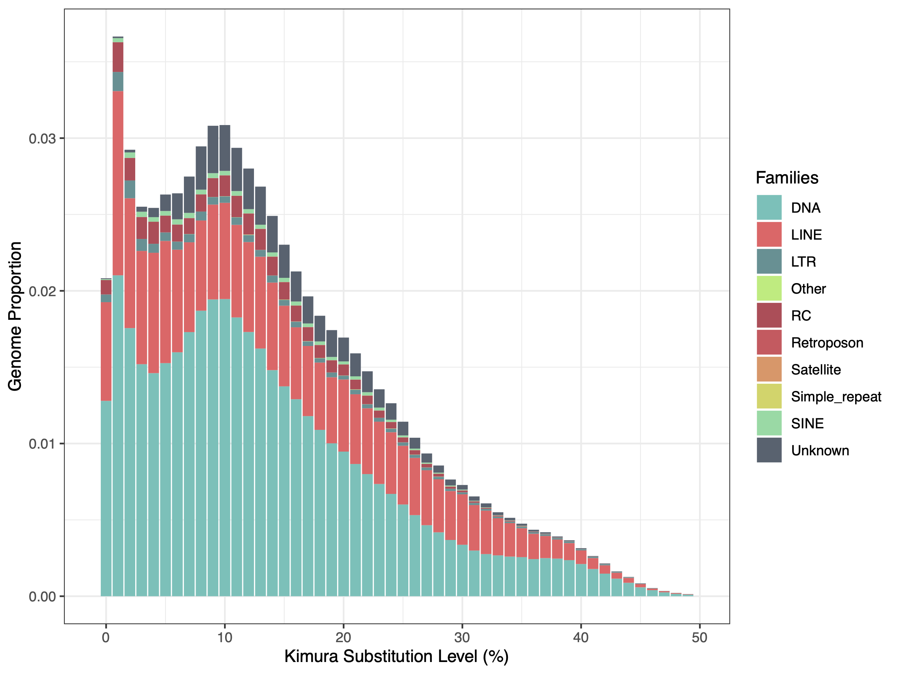
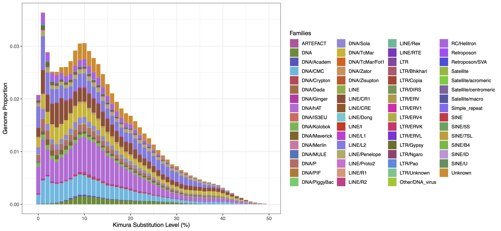
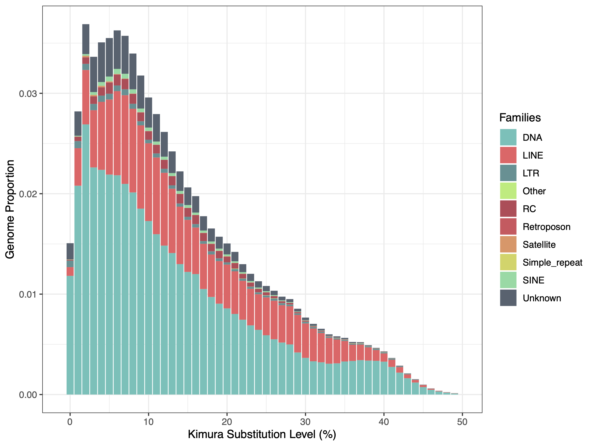
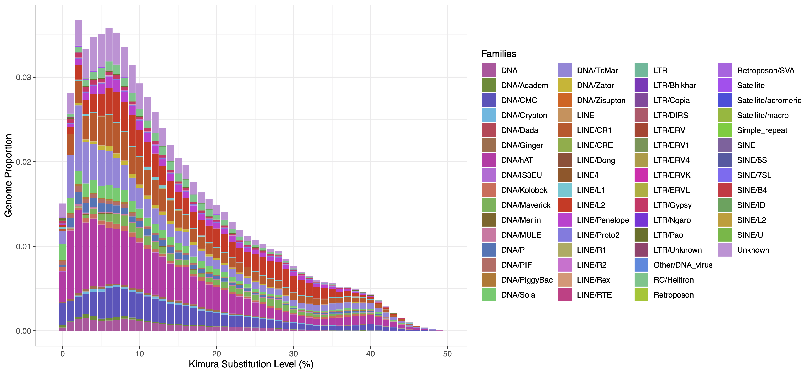
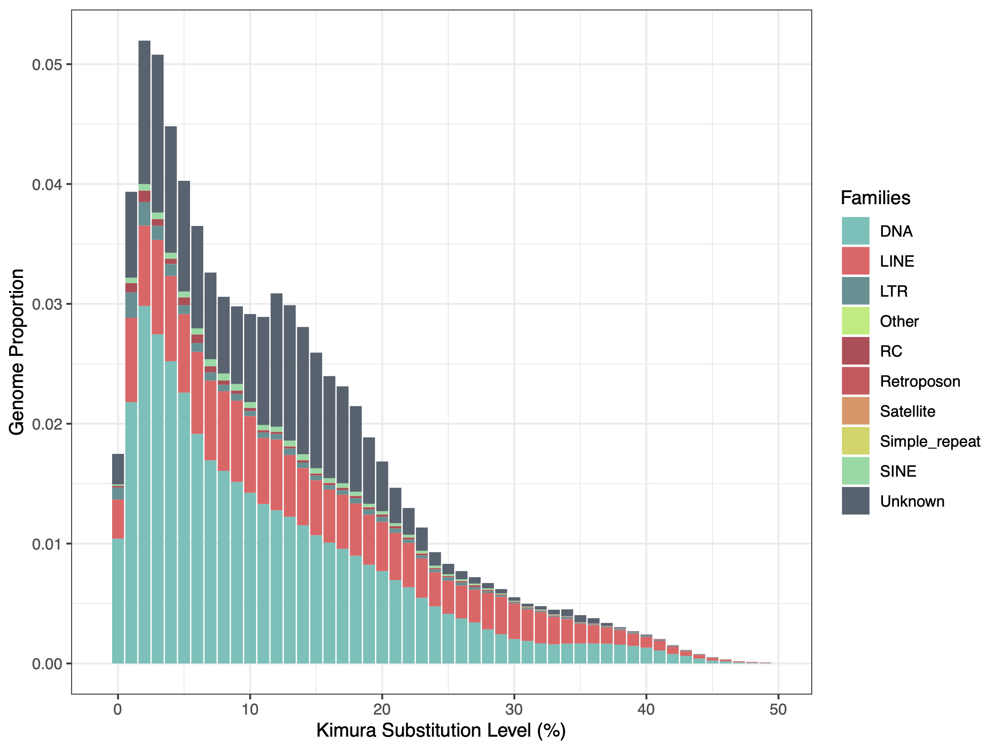
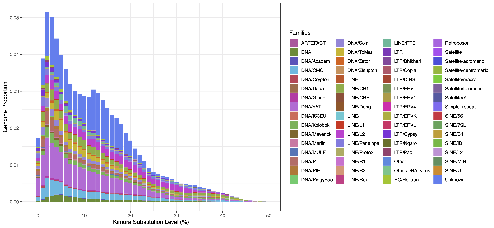
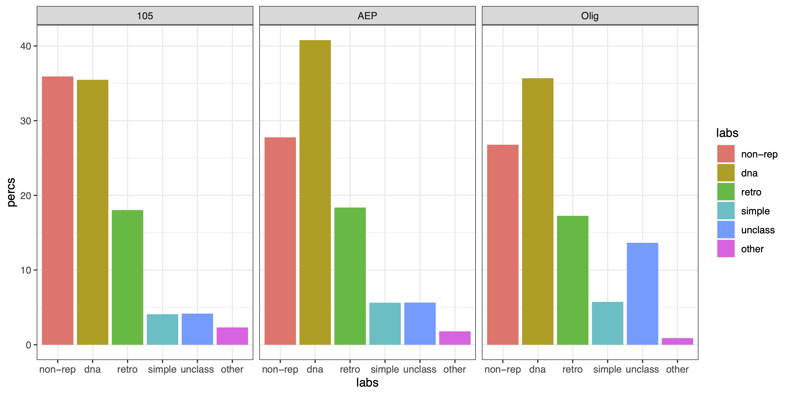

This document covers our analysis of repetitive elements in H. vulgaris and H. oligactis genome assemblies. For the strain AEP H. vulgaris and the H. oligactis genomes, this included performing ab initio predictions of repeat families. RepeatMasker was then used to identify repetitive regions in the H. oligactis and strain AEP and strain 105 H. vulgaris genomes. The RepeatMasker output was also used to generate plots visualizing repeat landscapes in each genome.
Identifying and Masking Repetitive Regions in Hydra GenomesMasking Repeats in the Strain AEP H. vulgaris assemblyIdentifying Repeat Families Using RepeatModeler2Masking Repeats using RepeatMaskerMasking Repeats in the Strain 105 H. vulgaris assembly Masking Repeats Using RepeatMaskerMasking Repeats in the H. oligactis AssemblyIdentifying Repeat Families Using RepeatModeler2Masking Repeats Using RepeatMaskerVisualizing Repeat Prediction Results Files Associated with This Document
Currently, repeat databases lack extensive and well curated REs for Hydra, so using publicly available databases would likely miss a large portion of the repeats. We therefore used RepeatModeler2 (v2.0.1) to perform ab initio repeat family predictions for the AEP assembly.
Before running the primary RepeatModeler2 pipeline, we first had to index the genome fasta file:
(01_aepRep/buildRMRef.sh)
x#SBATCH -p med#SBATCH --job-name=RMDB#SBATCH -c 8#SBATCH -t 60-0#SBATCH --mem=16G#SBATCH --error=RMDB.err#SBATCH --output=RMDB.out
../../RepeatModeler-2.0.1/BuildDatabase -name aep aep.final.genome.faWe then ran the RepeatModeler2 pipline with default settings, although we did include the optional LTR prediction pipeline:
(01_aepRep/runRM.sh)
xxxxxxxxxx#SBATCH -p bigmemh#SBATCH --job-name=RM#SBATCH -c 16#SBATCH -t 60-0#SBATCH --mem=360G#SBATCH --error=RM_%j.err#SBATCH --output=RM_%j.out
export PATH="/home/jacazet/reference/makerAnnotations/RepeatMasker:$PATH"export PATH="/home/jacazet/reference/makerAnnotations/RepeatModeler-2.0.1:$PATH"
../../RepeatModeler-2.0.1/RepeatModeler -database aep -pa 4 -LTRStructThe resulting Hydra-specific repeat file (consensi.fa.classified, which was renamed to aep-families.fa) was then used to mask the AEP assembly using RepeatMasker.
We used RepeatMasker (v4.0.7) to identify and mask repetitive sequences in the AEP assembly using repeat families predicted by RepeatModeler2:
(01_aepRep/runRMaskFull.sh)
xxxxxxxxxx#SBATCH -p med#SBATCH --job-name=RMask#SBATCH -c 24#SBATCH -t 60-0#SBATCH --mem=0#SBATCH --error=RMask_%j.err#SBATCH --output=RMask_%j.out
module load singularity
singularity exec -B /home/jacazet/reference/makerAnnotations/aepAnnot/repMask ~/maker-plus_3.01.03.sif RepeatMasker -pa 24 -lib aep-families.fa aep.final.genome.faBecause there may have been some repeat families that were missed by repeatmodeler, we also ran repeatmasker using the eumetazoa Dfam repeat database (included with RepeatMasker installation, Dfam version 3.1) to try and catch some of the missed repeats.
(01_aepRep/runRMaskEuk.sh)
xxxxxxxxxx#SBATCH -p med#SBATCH --job-name=RMask#SBATCH -c 24#SBATCH -t 60-0#SBATCH --mem=0#SBATCH --error=RMask_%j.err#SBATCH --output=RMask_%j.out
module load singularity
singularity exec -B /home/jacazet/reference/makerAnnotations/aepAnnot/repMask ~/maker-plus_3.01.03.sif RepeatMasker -pa 8 -species eumetazoa aep.final.genome.fa We then pooled the two masking results with the following command (note: the repeatmodeler results were moved to a folder called maskFull and the eumetazoa Dfam results were moved to a folder called eukMaskFull):
zcat maskFull/*cat eukMaskFull/*cat > bothMaskFull.cat
The pooled file was then processed to generate output files (including a hard masked fasta file and a repeat coordinates gff file) that combined the two masking results:
(01_aepRep/processBothFull.sh)
xxxxxxxxxx#SBATCH -p med#SBATCH --job-name=procRep#SBATCH -c 4#SBATCH -t 60-0#SBATCH --mem=0#SBATCH --error=process.err#SBATCH --output=process.out
../../RepeatMasker/ProcessRepeats -a -species eumetazoa -gff bothMaskFull.catAs part of this command, we included the -a flag, which created an optional alignment file needed to create the repeat landscape plots (used for visualization, described below).
The ProcessRepeats command generated the following statistics report:
(excerpt from 01_aepRep/bothMaskFull.tbl)
xxxxxxxxxx==================================================file name: bothMaskFullsequences: 15total length: 900935055 bp (900878955 bp excl N/X-runs)GC level: Unknown %bases masked: 650780425 bp ( 72.23 %)================================================== number of length percentage elements* occupied of sequence--------------------------------------------------Retroelements 369371 165530264 bp 18.37 % SINEs: 43707 5695511 bp 0.63 % Penelope 65254 20585629 bp 2.28 % LINEs: 303485 148934201 bp 16.53 % CRE/SLACS 337 180807 bp 0.02 % L2/CR1/Rex 213886 117270315 bp 13.02 % R1/LOA/Jockey 213 14587 bp 0.00 % R2/R4/NeSL 1837 450159 bp 0.05 % RTE/Bov-B 6756 1071405 bp 0.12 % L1/CIN4 1250 70123 bp 0.01 % LTR elements: 22179 10900552 bp 1.21 % BEL/Pao 2957 2360150 bp 0.26 % Ty1/Copia 2208 366647 bp 0.04 % Gypsy/DIRS1 13500 7818160 bp 0.87 % Retroviral 1945 70337 bp 0.01 %
DNA transposons 1053016 367413268 bp 40.78 % hobo-Activator 309698 120244440 bp 13.35 % Tc1-IS630-Pogo 150676 60159302 bp 6.68 % En-Spm 0 0 bp 0.00 % MuDR-IS905 0 0 bp 0.00 % PiggyBac 4586 2548041 bp 0.28 % Tourist/Harbinger 4140 1589641 bp 0.18 % Other (Mirage, 43967 16251064 bp 1.80 % P-element, Transib)
Rolling-circles 42095 15375012 bp 1.71 %
Unclassified: 190699 50938067 bp 5.65 %
Total interspersed repeats: 583881599 bp 64.81 %
Small RNA: 40214 5293672 bp 0.59 %
Satellites: 2407 613933 bp 0.07 %Simple repeats: 505012 46346571 bp 5.14 %Low complexity: 89006 4386174 bp 0.49 %==================================================Because some analyses require that only simple or only complex (i.e., interspersed) repeats be masked, we did additional repeatmasker runs to selectively mask just one of the two repeat types.
We first masked simple repeats using the repeatmodeler libraries:
(01_aepRep/runRMaskSimple.sh)
xxxxxxxxxx#SBATCH -p med#SBATCH --job-name=RMask#SBATCH -c 24#SBATCH -t 60-0#SBATCH --mem=60G#SBATCH --error=RMask_%j.err#SBATCH --output=RMask_%j.out
module load singularity
singularity exec -B /home/jacazet/reference/makerAnnotations/aepAnnot/repMask ~/maker-plus_3.01.03.sif RepeatMasker \ -noint \ -pa 8 \ -lib aep-families.fa \ aep.final.genome.fa Then we masked simple repeats using the Dfam eumetazoa library:
(01_aepRep/runRMaskEukSmpl.sh)
xxxxxxxxxx#SBATCH -p med#SBATCH --job-name=RMask#SBATCH -c 24#SBATCH -t 60-0#SBATCH --mem=0#SBATCH --error=RMask_%j.err#SBATCH --output=RMask_%j.out
module load singularity
singularity exec -B /home/jacazet/reference/makerAnnotations/aepAnnot/repMask ~/maker-plus_3.01.03.sif RepeatMasker -noint -pa 8 -species eumetazoa aep.final.genome.faWe then combined the repeatmasker output files:
zcat eukMaskSimp/*cat.gz maskSimp/*cat.gz > bothMaskSimp.cat
And generated the final masked product:
(01_aepRep/processBothSimp.sh)
xxxxxxxxxx#SBATCH -p med#SBATCH --job-name=procRep#SBATCH -c 24#SBATCH -t 60-0#SBATCH --mem=0#SBATCH --error=process.err#SBATCH --output=process.out
../../RepeatMasker/ProcessRepeats -species eumetazoa -noint -gff bothMaskSimp.catWe next performed interspersed/complex repeat masking, first with the repeatmodeler library:
(01_aepRep/runRMaskCplx.sh)
xxxxxxxxxx#SBATCH -p med#SBATCH --job-name=RMask#SBATCH -c 24#SBATCH -t 60-0#SBATCH --mem=0#SBATCH --error=RMask_%j.err#SBATCH --output=RMask_%j.out
module load singularity
singularity exec -B /home/jacazet/reference/makerAnnotations/aepAnnot/repMask ~/maker-plus_3.01.03.sif RepeatMasker -nolow -norna -pa 24 -lib aep-families.fa aep.final.genome.faThen with the eumetazoa library:
(01_aepRep/runRMaskEukCplx.sh)
xxxxxxxxxx#SBATCH -p med#SBATCH --job-name=RMask#SBATCH -c 24#SBATCH -t 60-0#SBATCH --mem=0#SBATCH --error=RMask_%j.err#SBATCH --output=RMask_%j.out
module load singularity
singularity exec -B /home/jacazet/reference/makerAnnotations/aepAnnot/repMask ~/maker-plus_3.01.03.sif RepeatMasker -nolow -norna -pa 8 -species eumetazoa aep.final.genome.faWe then combined these two outputs:
zcat eukMaskCplx/*cat.gz maskCplx/*cat.gz > bothMaskCplx.cat
And generated the final masked files:
(01_aepRep/processBothCplx.sh)
xxxxxxxxxx#SBATCH -p med#SBATCH --job-name=procRep#SBATCH -c 24#SBATCH -t 60-0#SBATCH --mem=0#SBATCH --error=process.err#SBATCH --output=process.out
../../RepeatMasker/ProcessRepeats -species eumetazoa -nolow -gff bothMaskCplx.catFinally, we created softmasked versions for all of the above repeatmasker runs using bedtools
xxxxxxxxxxbedtools maskfasta -fi aep.final.genome.fa -bed bothMaskFull.out.gff -fo aep.genome.fullsoft.fa -soft
bedtools maskfasta -fi aep.final.genome.fa -bed bothMaskCplx.out.gff -fo aep.genome.cplxsoft.fa -soft
bedtools maskfasta -fi aep.final.genome.fa -bed bothMaskSimp.out.gff -fo aep.genome.simpsoft.fa -softTo enable visualization of repeat density throughout the AEP assembly, we generated a bigwig file that quantified the number of repeats present at each position along the genome (essentially just a binary classification).
(01_aepRep/repeatDensity.sh)
xxxxxxxxxx
bedtools genomecov -i bothMaskCplx.out.gff -bga -g ../aep.genome > repDensity.bg
bedGraphToBigWig repDensity.bg ../aep.genome repDensity.bwBecause we wanted to use the 105 assembly as a point of comparison for the AEP assembly, and because we needed a repeat-masked version of the 105 assembly for our whole genome alignment (described in 07_genomeConservation.md), we also performed repeat masking on the 2.0 version of the strain 105 H. vulgaris genome.
For the 105 assembly, we opted to just use the repeat families we identified using the AEP assembly. The two strains are relatively closely related, so our approach was likely sufficient to capture most repeats, with the caveat that certain very recent repeat families may have been missed.
Overall, our strain 105 masking approach was essentially identical to our approach for strain AEP.
We first masked with the repeatmodeler families:
(02_105Rep/runRMaskFull105.sh)
xxxxxxxxxx#SBATCH -p bigmemm#SBATCH --job-name=RMask#SBATCH -c 60#SBATCH -t 60-0#SBATCH --mem=0#SBATCH --error=RMask_%j.err#SBATCH --output=RMask_%j.out
module load singularity
singularity exec -B /home/jacazet/reference/makerAnnotations/aepAnnot/repMask ~/maker-plus_3.01.03.sif RepeatMasker -pa 60 -lib aep-families.fa 105.faWe then masked with the Dfam eumetazoa library:
(02_105Rep/runRMaskEuk105.sh)
xxxxxxxxxx#SBATCH -p bigmemm #SBATCH --job-name=RMask#SBATCH -c 60#SBATCH -t 60-0#SBATCH --mem=0#SBATCH --error=RMask_%j.err#SBATCH --output=RMask_%j.out
module load singularity
singularity exec -B /home/jacazet/reference/makerAnnotations/aepAnnot/repMask ~/maker-plus_3.01.03.sif RepeatMasker -pa 60 -species eumetazoa 105.faWe combined the two outputs:
zcat 105Full/*cat 105EukFull/*cat > bothMaskFull105.cat
And generated combined output files:
(02_105Rep/processBothFull105.sh)
xxxxxxxxxx#SBATCH -p med#SBATCH --job-name=procRep#SBATCH -c 24#SBATCH -t 60-0#SBATCH --mem=0#SBATCH --error=process.err#SBATCH --output=process.out
../../RepeatMasker/ProcessRepeats -a -species eumetazoa -gff bothMaskFull105.catThis produced the following results table:
(excerpt from 02_105Rep/bothMaskFull105.tbl)
xxxxxxxxxx==================================================file name: bothMaskFull105sequences: 5525total length: 853782670 bp (786368896 bp excl N/X-runs)GC level: Unknown %bases masked: 547108923 bp ( 64.08 %)================================================== number of length percentage elements* occupied of sequence--------------------------------------------------Retroelements 343203 153928047 bp 18.03 % SINEs: 38473 4778739 bp 0.56 % Penelope 43347 14981775 bp 1.75 % LINEs: 284106 138174902 bp 16.18 % CRE/SLACS 479 303652 bp 0.04 % L2/CR1/Rex 216744 114131573 bp 13.37 % R1/LOA/Jockey 237 14748 bp 0.00 % R2/R4/NeSL 1677 325549 bp 0.04 % RTE/Bov-B 7339 902958 bp 0.11 % L1/CIN4 875 41858 bp 0.00 % LTR elements: 20624 10974406 bp 1.29 % BEL/Pao 2510 2314663 bp 0.27 % Ty1/Copia 2035 351580 bp 0.04 % Gypsy/DIRS1 13917 8132851 bp 0.95 % Retroviral 1466 59509 bp 0.01 %
DNA transposons 1006212 302842075 bp 35.47 % hobo-Activator 322359 101731995 bp 11.92 % Tc1-IS630-Pogo 126977 41903622 bp 4.91 % En-Spm 0 0 bp 0.00 % MuDR-IS905 0 0 bp 0.00 % PiggyBac 4049 1642422 bp 0.19 % Tourist/Harbinger 3888 1524997 bp 0.18 % Other (Mirage, 43726 14448428 bp 1.69 % P-element, Transib)
Rolling-circles 45342 19602116 bp 2.30 %
Unclassified: 155775 35584398 bp 4.17 %
Total interspersed repeats: 492354520 bp 57.67 %
Small RNA: 35432 4371768 bp 0.51 %
Satellites: 1203 153535 bp 0.02 %Simple repeats: 458267 30537157 bp 3.58 %Low complexity: 87404 4312296 bp 0.51 %==================================================We also generated a softmasked version of the genome fasta that was used for a cross-species whole-genome alignment:
xxxxxxxxxxbedtools maskfasta -fi 105.fa -bed bothMaskFull105.out.gff -fo 105.fullsoft.fa -softAs H. oligactis is somewhat distantly related to H. vulgaris, we opted to generate an oligactis specific repeat library using RepeatModeler2
First we prepped the oligactis fasta file:
(03_oligRep/buildRMRefOlig.sh)
xxxxxxxxxx#SBATCH -p med#SBATCH --job-name=RMDB#SBATCH -c 8#SBATCH -t 60-0#SBATCH --mem=16G#SBATCH --error=RMDB.err#SBATCH --output=RMDB.out
../../RepeatModeler-2.0.1/BuildDatabase -name olig olig_genome.faWe then executed the RepeatModeler2 pipeline using default settings.
Note that in the below script we're running the RepeatModeler2 pipeline through the dfam-tetools wrapper script, as opposed to the script 01_aepRep/runRM.sh that executed RepeatModeler2 through a Singularity container. Ultimately, the actual command executed by the two scripts was identical.
(03_oligRep/runRMolig.sh)
xxxxxxxxxx#SBATCH -p bigmemh#SBATCH --job-name=RM#SBATCH --exclusive#SBATCH -t 60-0#SBATCH --mem=0#SBATCH --error=RM_%j.err#SBATCH --output=RM_%j.out
module load singularity
./dfam-tetools.sh --singularity -- RepeatModeler -database olig -pa 8 -LTRStructFor the oligactis genome, we found that we were not able to run the RepeatModeler2 pipeline in its entirety, as it would repeatedly crash during the LTR prediction step. Because the pipeline iteratively updates its repeat family predictions over the course of multiple rounds of analysis, and because LTR prediction is the last step in the pipeline, we were able to recover repeat predictions that were equivalent to the output of a normal RepeatModeler run without invoking the optional LTRPipeline step. We used this recovered repeat family file (consensi.fa.classified, which was renamed to oligConsensi.fa.classified) for subsequent repeatmasking of the oligactis assembly.
For the repeatmasking process, we applied the same basic approach as we did for the H. vulgaris genomes.
We first masked the genome using our set of predicted repeat families from repeatmodeler:
(03_oligRep/runRMaskFullOlig.sh)
xxxxxxxxxx#SBATCH -p bigmemm#SBATCH --job-name=RMask#SBATCH --exclusive#SBATCH -t 60-0#SBATCH --mem=0#SBATCH --error=RMask_%j.err#SBATCH --output=RMask_%j.out
module load singularity
singularity exec -B /home/jacazet/reference/makerAnnotations/aepAnnot/repMask ~/maker-plus_3.01.03.sif RepeatMasker -pa 24 -lib oligConsensi.fa.classified olig_genome.faWe then performed an additional masking step using the Dfam eumetazoa repeat library:
(03_oligRep/runOligMaskEuk.sh)
xxxxxxxxxx#SBATCH -p med#SBATCH --job-name=RMask#SBATCH -c 24#SBATCH -t 60-0#SBATCH --mem=0#SBATCH --error=RMask_%j.err#SBATCH --output=RMask_%j.out
module load singularity
singularity exec -B /home/jacazet/reference/makerAnnotations/aepAnnot/repMask ~/maker-plus_3.01.03.sif RepeatMasker -pa 8 -species eumetazoa olig_genome.faWe combined these two results:
zcat oligFullMask/*cat oligEuk/*cat > olig_genome_combined.fa.cat
And processed them to generate a final set of masked repeats:
(03_oligRep/runProcessOlig.sh)
xxxxxxxxxx#SBATCH -p med#SBATCH --job-name=procRep#SBATCH -c 24#SBATCH -t 60-0#SBATCH --mem=0#SBATCH --error=process.err#SBATCH --output=process.out
../../RepeatMasker/ProcessRepeats -a -species eumetazoa -gff olig_genome_combined.fa.catThis generated the following results table:
(excerpt from olig_genome_combined.fa.tbl)
xxxxxxxxxx==================================================file name: olig_genome_combined.fasequences: 16314total length: 1274417049 bp (1274416349 bp excl N/X-runs)GC level: Unknown %bases masked: 933076482 bp ( 73.22 %)================================================== number of length percentage elements* occupied of sequence--------------------------------------------------Retroelements 520888 219974136 bp 17.26 % SINEs: 72040 10988275 bp 0.86 % Penelope 79044 29508788 bp 2.32 % LINEs: 411250 187430186 bp 14.71 % CRE/SLACS 1054 529458 bp 0.04 % L2/CR1/Rex 246444 132234354 bp 10.38 % R1/LOA/Jockey 530 40706 bp 0.00 % R2/R4/NeSL 1030 132656 bp 0.01 % RTE/Bov-B 61477 13385729 bp 1.05 % L1/CIN4 2277 128162 bp 0.01 % LTR elements: 37598 21555675 bp 1.69 % BEL/Pao 4480 4038527 bp 0.32 % Ty1/Copia 1615 765983 bp 0.06 % Gypsy/DIRS1 26775 16124509 bp 1.27 % Retroviral 3553 174452 bp 0.01 %
DNA transposons 1606844 454735555 bp 35.68 % hobo-Activator 584511 169281114 bp 13.28 % Tc1-IS630-Pogo 125711 40879334 bp 3.21 % En-Spm 0 0 bp 0.00 % MuDR-IS905 0 0 bp 0.00 % PiggyBac 6787 3201070 bp 0.25 % Tourist/Harbinger 7908 2077348 bp 0.16 % Other (Mirage, 122702 36281037 bp 2.85 % P-element, Transib)
Rolling-circles 33538 10277857 bp 0.81 %
Unclassified: 546844 173957948 bp 13.65 %
Total interspersed repeats: 848667639 bp 66.59 %
Small RNA: 70798 10576788 bp 0.83 %
Satellites: 3860 789681 bp 0.06 %Simple repeats: 814707 66381562 bp 5.21 %Low complexity: 133217 6708423 bp 0.53 %==================================================We also generated a softmasked version of the genome fasta for subsequent gene prediction analyses.
xxxxxxxxxxbedtools maskfasta -fi olig_genome.fa -bed fullOligMask.out.gff -fo olig_genome.sm.fa -softTo visualize our repeat annotation results, we generated repeat landscape plots, which use sequence divergence in individual repeat instances throughout a genome to infer the history of transposition events.
To generate repeat landscapes, we used the .align files generated by the repeatmasker ProcessRepeats function. Repeatmasker has built in functionality both to calculate the divergence statistics needed to create a repeat landscape (saved in a .divsum file) and to generate interactive plots of the results (saved as a .html file).
We ran these utility functions for all three genomes we had used for repeatmasker runs. First for the AEP assembly:
(04_visRep/calcKimura.sh)
xxxxxxxxxx#SBATCH -p med#SBATCH --job-name=repland#SBATCH -c 1#SBATCH -t 60-0#SBATCH --mem=16G#SBATCH --error=repland.err#SBATCH --output=repland.out
perl ../../RepeatMasker/util/calcDivergenceFromAlign.pl -s aep.divsum bothMaskFull.alignperl ../../RepeatMasker/util/createRepeatLandscape.pl -g 900935055 -div aep.divsum > aepRepLand.htmlThen the 105 assembly:
(04_visRep/calcKimura105.sh)
xxxxxxxxxx#SBATCH -p med#SBATCH --job-name=repland#SBATCH -c 1#SBATCH -t 60-0#SBATCH --mem=16G#SBATCH --error=repland.err#SBATCH --output=repland.out
perl ../../RepeatMasker/util/calcDivergenceFromAlign.pl -s 105.divsum bothMaskFull105.alignperl ../../RepeatMasker/util/createRepeatLandscape.pl -g 853782670 -div 105.divsum > 105RepLand.htmlThen the oligactis assembly:
(04_visRep/calcKimuraOlig.sh)
xxxxxxxxxx#SBATCH -p med#SBATCH --job-name=repland#SBATCH -c 1#SBATCH -t 60-0#SBATCH --mem=16G#SBATCH --error=repland.err#SBATCH --output=repland.out
perl ../../RepeatMasker/util/calcDivergenceFromAlign.pl -s olig.divsum olig_genome_combined.fa.alignperl ../../RepeatMasker/util/createRepeatLandscape.pl -g 1274417049 -div olig.divsum > oligRepLand.htmlWe wanted to customize the repeat landscape plots, so we extracted the relevant results table from each .divsum file:
xxxxxxxxxxcsplit -f aepDiv aep.divsum '/Coverage for each repeat/' '{0}' && sed '1d' aepDiv01 > kimuraAEP.txt && rm aepDiv0*csplit -f 105Div 105.divsum '/Coverage for each repeat/' '{0}' && sed '1d' 105Div01 > kimura105.txt && rm 105Div0*csplit -f oligDiv olig.divsum '/Coverage for each repeat/' '{0}' && sed '1d' oligDiv01 > kimuraOlig.txt && rm oligDiv0*We then used the following R script to generated stacked bar graphs of each genome's repeat landscape. We generated two plots per genome: one that grouped repeats by class (e.g., DNA element, retro-element, etc.) and one that grouped repeats by family (CR1, LTR, Mariner, etc.).
(04_visRep/kimuraPlot.R)
xxxxxxxxxxlibrary(rstudioapi)library(ggplot2)library(RColorBrewer)
setwd(dirname(getActiveDocumentContext()$path))
kimP <- function(pref,size){ #get file name that has repeat landscape fname <- paste0('kimura',pref,'.txt') #import data kDat <- read.delim(fname,sep = ' ') #drop a weird last column thats all NAs kDat <- kDat[,-ncol(kDat)] #restructure the data so that all the columns #get combined into a single row, with an #additional column to indicate the repeat #class kDat.plot <- lapply(2:ncol(kDat),function(x){ newDF <- kDat[,c(1,x)] colnames(newDF) <- c('perc','cov') newDF$ident <- colnames(kDat)[x] return(newDF) }) kDat.plot <- do.call(rbind,kDat.plot) #combine results from repeat subfamilies kDat.plot$ident <- gsub('[.].*','',kDat.plot$ident) kDat.plot <- aggregate(kDat.plot$cov,list(kDat.plot$perc,kDat.plot$ident),sum) colnames(kDat.plot) <- c('perc','ident','cov') #calculate percent coverage based on genome size kDat.plot$cov <- kDat.plot$cov/size #drop RNA results (things like small RNAs and whatnot) kDat.plot <- kDat.plot[!grepl('RNA',kDat.plot$ident),] #drop artefact results kDat.plot <- kDat.plot[!grepl('ARTEFACT',kDat.plot$ident),] #define colors used in plot colourCount <- length(unique(kDat.plot$ident)) pal <- colorRampPalette(c('#556270','#4ECDC4','#C7F464','#FF6B6B','#C44D58'))(colourCount) set.seed(12345) pal <- sample(pal) #generate stacked bar plot of repeat landscape ggplot(kDat.plot,aes(x=perc,y=cov,fill=ident)) + geom_bar(stat="identity", position = position_stack(reverse = TRUE)) + scale_fill_manual(name="Families", values = pal) + xlim(-1,50) + labs(x="Kimura Substitution Level (%)", y="Genome Proportion") + theme_bw() #save plot pname <- paste0('repFamKimura',pref,'.pdf') ggsave(pname,width=8,height=6) #repeat the plot data formating process kDat.plot <- lapply(2:ncol(kDat),function(x){ newDF <- kDat[,c(1,x)] colnames(newDF) <- c('perc','cov') newDF$ident <- colnames(kDat)[x] return(newDF) }) kDat.plot <- do.call(rbind,kDat.plot) #this time we'll keep most of the subfamily information #we'll just drop the subfamily number kDat.plot$ident <- gsub('(^[^.]+[.][^.]+)[.].*','\\1',kDat.plot$ident) #fix some formatting issues with extra dots kDat.plot$ident <- gsub('[.]+','.',kDat.plot$ident) kDat.plot$ident <- gsub('[.]$','',kDat.plot$ident) #dot to slash for clarity/readability kDat.plot$ident <- gsub('[.]','/',kDat.plot$ident) #collapse data based on subfamilies kDat.plot <- aggregate(kDat.plot$cov,list(kDat.plot$perc,kDat.plot$ident),sum) colnames(kDat.plot) <- c('perc','ident','cov') #normalize values by total genome size kDat.plot$cov <- kDat.plot$cov/size #drop RNA repeats kDat.plot <- kDat.plot[!grepl('RNA',kDat.plot$ident),] #generate color set for plotting colourCount <- length(unique(kDat.plot$ident)) #pal <- colorRampPalette(c('#556270','#4ECDC4','#C7F464','#FF6B6B','#C44D58'))(colourCount) pal <- c("#ea6519","#494edc","#43cd2d","#8732d9","#97c61d","#b94ff1", "#4fb83c","#d640d2","#31cb6b","#ed2bb1","#88b930","#8b36bb", "#cdb623","#846bf2","#b0b034","#bc65e2","#5bb354","#ce3aa8", "#85af42","#5d53bd","#e08d24","#577ff0","#c99f30","#877ce1", "#5e8b2f","#c66dd7","#47a45a","#df73d1","#4fc58a","#e3371f", "#36c8d4","#e03842","#38b99a","#e23568","#34b9e1","#d05827", "#468ae0","#c07a30","#5558a4","#b49c40","#92489f","#6f9554", "#da3f87","#4c905e","#c056a0","#677021","#9b87da","#b0ad5f", "#4375b7","#bd442f","#66a1e5","#a05624","#cb94d6","#846625", "#87629f","#d7935a","#a4426e","#e69976","#e07aa5","#ab6f4b", "#ce4858","#9d4f35","#c3586b","#e36f5b","#c76e66") set.seed(3821) pal <- sample(pal) #generate subfamily repeat landscape stacked barplot ggplot(kDat.plot,aes(x=perc,y=cov,fill=ident)) + geom_bar(stat="identity", position = position_stack(reverse = TRUE)) + scale_fill_manual(name="Families", values = pal) + xlim(-1,50) + labs(x="Kimura Substitution Level (%)", y="Genome Proportion") + theme_bw() pname <- paste0('repSubFamKimura',pref,'.pdf') ggsave(pname,width=13,height=6)}
prefs <- list(c('105',786368896),c('AEP',900878955),c('Olig',1274416349))
lapply(prefs, function(x) kimP(x[1],as.numeric(x[2])))(AEP repeats grouped by class)

(AEP repeats grouped by family)

(105 repeats grouped by class)

(105 repeats grouped by family)

(oligactis repeats grouped by class)

(oligactis repeats grouped by family)

Finally, we also generated a simple bar plot summarizing the repeat composition of each genome using the result tables generated by the repeatmasker ProcessRepeats function:
(04_visRep/repPercPlots.R)
xxxxxxxxxxlibrary(rstudioapi)library(ggplot2)
setwd(dirname(getActiveDocumentContext()$path))
#import repeatmasker tables#(results from both eumetazoa lib and AEP/olig repeatmodeler libs)fileNames <- c('bothMaskFull.tbl','bothMaskFull105.tbl','olig_genome_combined.fa.tbl')
#function to extract percentage from character string and convert it to numeric datagetPerc <- function(x){ return(as.numeric(gsub('.*?([^ ]+) \\%$','\\1',x)))}
#function to extract repeat statistics from repeatmasker tablespercPlot <- function(x){ #import results table text as a character vector #one string per line rp <- readLines(x) #extract the percentage of total bases masked tmask <- as.numeric(gsub('.*\\((.*)\\%\\).*','\\1',rp[6])) #extract percentages of masked repeats that were: #retroelements, DNA transposons, Unclassified, simple repeats, or low complexity percs <- vapply(c(11,27,39,47,48), function(x) getPerc(rp[x]), numeric(1)) #combine simple and low complexity repeats into a single metric #also calculate the percent of genome that was non repetitive #and the repeats that didn't fit into one of the named categories percs <- c(percs[1:3],percs[4] + percs[5],100-tmask,tmask-sum(percs)) fNames <- c('retro','dna','unclass','simple','non-rep','other') return(data.frame(labs = factor(fNames,fNames[c(5,2,1,4,3,6)]), percs = percs))}
#combine results from the three different genomes into a single df for plottingplotDF <- rbind(percPlot(fileNames[1]), percPlot(fileNames[2]), percPlot(fileNames[3]))#label the species of origin for all the statisticsplotDF$spec <- rep(c('AEP','105','Olig'),c(6,6,6))
#generate barplots of repeat percentages, split by speciesggplot(plotDF,aes(x=labs,y=percs,fill=labs)) + geom_col() + facet_wrap(.~spec) + theme_bw()ggsave('repPercBar.pdf',width = 10,height = 5)
xxxxxxxxxx02_repeatMasking/├── 01_aepRep│ ├── aep-families.faAEP Repeat families identified by RepeatModeler2│ ├── aep.genome.cplxsoft.faAEP genome assembly with interspersed/complex repeats soft-masked│ ├── aep.genome.fullsoft.faAEP genome assembly with all repeats soft-masked│ ├── aep.genome.simpsoft.faAEP genome assembly with simple repeats soft-masked│ ├── bothMaskCplx.catCombined RepeatMasker output from runRMaskCplx.sh and runRMaskEukCplx.sh. Targetsall complex/interspersed repeats in the AEP genome.│ ├── bothMaskCplx.out.gffGenome coordinates file for all complex/interspersed repeats in the AEP genome.│ ├── bothMaskFull.alignAEP repeat alignments. Used to generate the AEP repeat landscape.│ ├── bothMaskFull.catCombined RepeatMasker output from runRMaskFull.sh and runRMaskEuk.sh. Targetsall repeats in the AEP genome.│ ├── bothMaskFull.out.gffGenome coordinates file for all repeats in the AEP genome.│ ├── bothMaskFull.tblRepeat masking report detailing the repeat makeup of the AEP genome.│ ├── bothMaskSimp.catCombined RepeatMasker output from runRMaskSimple.sh and runRMaskEukSmpl.sh. Targetsall simple repeats in the AEP genome.│ ├── bothMaskSimp.out.gffGenome coordinates file for all simple repeats in the AEP genome.│ ├── buildRMRef.shShell script to prep the AEP genome fasta file for RepeatModeler2│ ├── processBothCplx.shShell script that integrates masking results for all complex/interspersed repeatsidentified by runRMaskCplx.sh and runRMaskEukCplx.sh.│ ├── processBothFull.shShell script that integrates masking results for all repeats identified byrunRMaskFull.sh and runRMaskEuk.sh.│ ├── processBothSimp.shShell script that integrates masking results for all simple repeats identifiedby runRMaskCplx.sh and runRMaskEukCplx.sh.│ ├── repDensity.bwBigwig file that shows the number of repetitive elements identified at eachposition in the AEP genome assembly.│ ├── repeatDensity.shShell script that quantifies the number of repetitive elements present at eachposition in the AEP genome assembly and outputs the results as a bigwig file.│ ├── runRMaskCplx.shShell script that uses the RepeatModeler2 repeat families to identify and maskcomplex/interspersed repeats in the AEP genome.│ ├── runRMaskEukCplx.shShell script that uses the Dfam eumetazoa repeat families to identify and maskcomplex/interspersed repeats in the AEP genome.│ ├── runRMaskEuk.shShell script that uses the Dfam eumetazoa repeat families to identify and maskall repeats in the AEP genome.│ ├── runRMaskEukSmpl.shShell script that uses the Dfam eumetazoa repeat families to identify and maskall simple repeats in the AEP genome.│ ├── runRMaskFull.shShell script that uses the RepeatModeler2 repeat families to identify and maskall repeats in the AEP genome.│ ├── runRMaskSimple.shShell script that uses the RepeatModeler2 repeat families to identify and maskall simple repeats in the AEP genome.│ └── runRM.shShell script that runs the RepeatModeler2 pipeline on the AEP genome.├── 02_105Rep│ ├── 105.fullsoft.faStrain 105 genome assembly with all repeats soft-masked.│ ├── bothMaskFull105.alignStrain 105 repeat alignments. Used to generate the strain 105 repeat landscape.│ ├── bothMaskFull105.catCombined RepeatMasker output from runRMaskEuk105.sh and runRMaskFull105.sh. Targetsall repeats in the strain 105 genome.│ ├── bothMaskFull105.out.gffGenome coordinates file for all repeats in the strain 105 genome.│ ├── bothMaskFull105.tblRepeat masking report detailing the repeat makeup of the strain 105 genome.│ ├── processBothFull105.shShell script that integrates masking results for all repeats identified byrunRMaskFull105.sh and runRMaskEuk105.sh.│ ├── runRMaskEuk105.shShell script that uses the strain Dfam eumetazoa repeat families to identifyand mask all repeats in the strain 105 genome.│ └── runRMaskFull105.shShell script that uses the strain AEP RepeatModeler2 repeat families to identifyand mask all repeats in the strain 105 genome.├── 03_oligRep│ ├── buildRMRefOlig.shShell script to prep the oligactis genome fasta file for RepeatModeler2│ ├── oligConsensi.fa.classifiedoligactis Repeat families identified by RepeatModeler2│ ├── olig_genome_combined.fa.alignoligactis repeat alignments. Used to generate the oligactis repeat landscape.│ ├── olig_genome_combined.fa.catCombined RepeatMasker output from runRMaskFullOlig.sh and runOligMaskEuk.sh. Targetsall repeats in the oligactis genome.│ ├── olig_genome_combined.fa.out.gffGenome coordinates file for all repeats in the oligactis genome.│ ├── olig_genome_combined.fa.tblRepeat masking report detailing the repeat makeup of the oligactis genome.│ ├── olig_genome.fullsoft.faoligactis genome assembly with all repeats soft-masked│ ├── runOligMaskEuk.shShell script that uses the strain Dfam eumetazoa repeat families to identifyand mask all repeats in the oligactis genome.│ ├── runProcessOlig.shShell script that integrates masking results for all repeats identified byrunRMaskFullOlig.sh and runOligMaskEuk.sh.│ ├── runRMaskFullOlig.shShell script that uses the strain oligactis RepeatModeler2 repeat families toidentify and mask all repeats in the strain 105 genome.│ └── runRMolig.shShell script that runs the RepeatModeler2 pipeline on the oligactis genome.└── 04_visRep├── 105.divsumRepeat alignment statistics calculated from bothMaskFull105.align├── aep.divsumRepeat alignment statistics calculated from bothMaskFull.align├── calcKimura105.shShell script that calculates repeat alignment statistics and generates arepeat landscape for the strain 105 genome.├── calcKimuraOlig.shShell script that calculates repeat alignment statistics and generates arepeat landscape for the oligactis genome.├── calcKimura.shShell script that calculates repeat alignment statistics and generates arepeat landscape for the strain AEP genome.├── kimura105.txtTable extracted from 105.divsum that was used to generate the strain 105kimura plot├── kimuraAEP.txtTable extracted from aep.divsum that was used to generate the strain AEPkimura plot├── kimuraOlig.txtTable extracted from olig.divsum that was used to generate the oligactiskimura plot├── kimuraPlot.RR script that generates kimura plots using the divsum stats for the oligactisand strain 105 and strain AEP vulgaris genomes.├── olig.divsumRepeat alignment statistics calculated from olig_genome_combined.fa.align└── repPercPlots.RR script that generates simple bar plots summarizing the statistics in therepeatmasker .tbl files for oligactis and the strain 104 and AEP vulgarisgenomes.